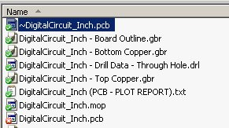

The Line Grinder software converts the Gerber plots of PCB circuits into GCode which can then be used to create isolation milled circuit boards. The freeware DesignSpark software is one product which can be used to create the PCB designs suitable for isolation milling. There are a number of things you need to know in order to configure DesignSpark so that it will save Gerber plot files in a format which the Line Grinder can read.
The following is a step-by-step tutorial using the DigitalCircuit_Inch.pcb DesignSpark PCB design sample which is installed with the Line Grinder software in the Examples - DesignSpark sub folder. Click on any of the images to make them larger.
The image below shows the DigitalCircuit_Inch.pcb PCB design sample open in the DesignSpark software.
If you move your mouse over the objects in the pads and traces in the PCB design you will see that the origin, the point (0,0) is well off the page - about three inches to the left and five inches below. The Line Grinder software can cope with this - but it makes things much better if the origin is located on the lower left hand corner of the border. This is easy to change:
Once the origin is set, you will see a cross hair icon on the bottom corner as shown in the image below.
One of the hardest problems to solve when creating isolation milled circuits is how to align the top and bottom copper layers. Line Grinder resolves this issue by requiring pads of a specific size called Reference Pin pads to be added to the PCB. You determine the size you use and tell the Line Grinder software (in the Isolation Cut File Managers) what that size is. Often the Reference Pin Pads are co-incident with the mounting holes of the PCB. If you do not want these pads on your board (as in the example below) - no problem. Just put them outside the border.
The following steps will now place the first Reference Pin pad. Since we do not want to have any mounting holes drilled on this board we will place the Reference Pin pads outside the PCB border.
The image below shows the bottom left Reference Pin pad once it has been sized and positioned. Note that it is centered over a grid dot. This will make it easy to place the other Reference Pin Pads an identical distance from the border.
The main thing about the Reference Pin pads is that they must be of a known unique size, they must be in a rectangular formation and they must be the same distance from the board edges. They can be inside or outside the board - but it is critical that they are equidistant from the edges. You must have at least two Reference Pin Pads. If the IsoFlipMode in your Isolation Cut File Manager is Flip_X then the Reference Pin pads must be on the same line parallel to the X axis. Similarly if the IsoFlipMode in your Isolation Cut File Manager is Flip_Y then the Reference Pin pads must be on the same line parallel to the Y axis. In general it is easier to just put four Reference Pin Pads on the PCB - each equidistant from a border corner.
Note the easy way to create the rest of the Reference Pin pads is just to copy the first pad placed in the step above and then paste it into the design where needed. Once dropped in place, you can easily drag the pad about to get the position right.
The image below shows the PCB with four Reference Pin pads placed. Click on the image to enlarge it and note that the pads are equidistant from the border edges and are in a strict rectangular formation.
Now that the origin is set and the Reference Pin pads have been placed on the PCB, it is time to save the design as Gerber and Excellon files. These files are what the Line Grinder software will read in order to produce the Isolation Milling GCode (and other useful GCode as well). Click on the Output menu item at the top of the screen and then choose the Manufacturing Plots ... sub item. This opens the Gerber Output Form as seen in the image below.
On the Gerber Output Form a number of options have been enabled that we do not need, and also, a plot to output the board outline will need to be added - it is not present by default. The steps below indicate the procedure
The images below show the Gerber Output Options in a suitable configuration.
Pressing on the Run button on Gerber Output Form will output the Gerber files for the top and bottom copper layers and the board outline. The plot entitled Drill Data - Through Hole will be output as an Excellon drill file. The image below shows the output files. Note the format of the names - the trailing part of the names such as Bottom Copper.gbr or DigitalCircuit_Inch - Drill Data - Through Hole.drl can be used as FilenamePatterns in the Line Grinder software to associate a File Manager with the file. The File Manager will determine the operations (what type of GCode it is converted to) and the settings used in the GCode.

At this point, the files are ready to be read by the Line Grinder software. Once the Line Grinder software is started you will need to create some File Managers - and configure them to settings suitable for your purposes. There is a button on the Settings Tab entitled Add Managers for DesignSpark that can be used to create a useful set of File Managers to get started with. You will need to adjust the settings as appropriate.
Note that the default setting for the Reference Pin pads is 0.125 inch and the above discussion sets the pins to a value of 0.100 inch. Using the default settings, the Line Grinder software will not be able to find the Reference Pins, and will return an error message when the file is opened. Change the ReferencePinPadDiameter setting in the IsolationCut File Managers for the Top and Bottom Copper layers to a value of 0.100 to fix this problem.
The image below shows the DigitalCircuit_Inch - Bottom Copper.gbr file after conversion to Isolation GCode in the Line Grinder software.
{kind=link}
{kind=link}
{kind=link}
{kind=link}
{kind=link}
{kind=link}
{kind=link}
{kind=link}